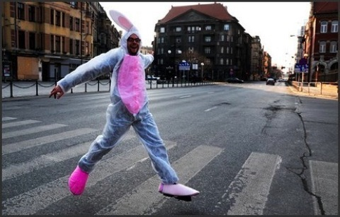

Happening Joanny John i Małgorzaty Borowskiej “Follow the White Rabbit”

PRACOWNIA


Hans Bellmer Society

107 Urodziny Hansa Bellmera w Katowicach
Zjazd Założycieli Buddyzmu w Polsce
URBANOWICZ

HALLOWEEN

Svankmajer
Piastowska w
Swiatowidzie


Jan Przyłuski podczas akcji “Follow the White Rabbit”, foto: Magda Makar
Zapis filmowy z akcji, zdjęcia i montaż: Michał Leks
Pierwotna akcja Joanny John i Małgorzaty Borowskiej ma swoją kontynuację. Praca happeningowa tego rodzaju domaga się poszerzenia pola, ujawnienia swojej zagadki. Święto życia i sztuka nowowczesna spotykają się, kultura jest dziś bardziej otwarta i szuka swoich korzeni w seksie, zabawie, wizji i transgresji.
więcej zdjęć z happeningu “Follow the White Rabbit 1”